MongoDB
Mikel Egaña Aranguren
mikel-egana-aranguren.github.io

Mikel Egaña Aranguren
Mikel Egaña Aranguren
mikel-egana-aranguren.github.io
https://github.com/mikel-egana-aranguren/ABD

BD NoSQL orientada a documentos (JSON)
Su nombre viene de la palabra Humongous (“gigantesco”)
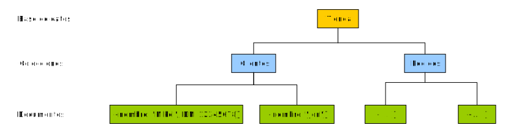
Un documento se organiza en formato JSON (JavaScript Object Notation): Internamente se almacena en formato Binary JSON (BSON)
Cada dato como clave valor
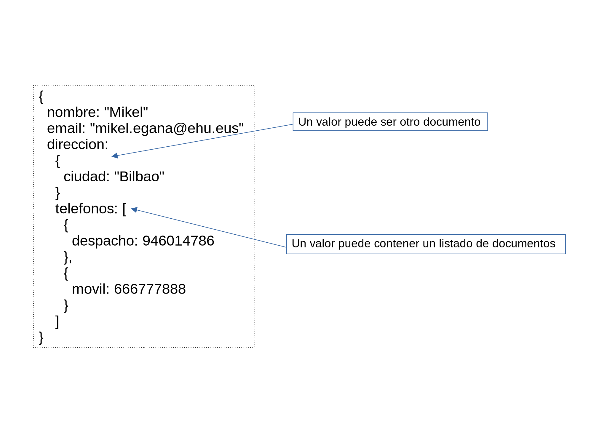
Equivalencia aproximada con modelo relacional:
Diferencias principales con modelo relacional:
$ mongosh
> show dbs
> db
> use nombre-BBDD
> cls
> db.
> use tienda
> db.createCollection("clientes")> show dbs
> show collections
> use tienda
> db.[coleccion].insertOne([documento])
> db.clientes.insertOne({"nombre":"mikel"})> db.clientes.insertOne ({ _id:1 , nombre:"josu" }) > db.[nombre-colección].find()
Insertar múltiples documentos en una colección:
> db.[nombre-colección].insertMany( [array-docs] )
> db.departamentos.insertMany([{"nombre":"Contabilidad","empleados":45,"responsable":"Rosa","edificio":"A"},{"nombre":"Almacen","empleados":5}])
> db.[nombre-colección].find([patrón])
> db.[nombre-colección].findOne([patrón])
> db.libros.find({editorial:"Biblio"})> db.libros.find({editorial:"Biblio", cantidad: 12})> db.libros.find({editorial:"Biblio", cantidad: { $gt: 20 }})> db.libros.find({editorial:"Biblio", titulo : /Don.*/})> db.libros.find({condicion1,condicion2,condicion3})> db.libros.find({$and : [{condicion1},{condicion2},{condicion3}]})> db.libros.find({ precio : {$gt: 25}, cantidad : {$lt : 25}})> db.libros.find({ $or : [ {precio : {$gt: 25}}, {cantidad : {$lt : 25}}]}){ campoAMostrar: 1, campoAOcultar: 0}> db.libros.find({editorial: "Planeta"},{titulo:1, _id:0,editorial:1})> db.[nombre-colección].deleteOne([patrón])
> db.[nombre-colección].deleteMany([patrón])
> db.[nombre-colección].deleteMany( {} )> db.[nombre-colección].updateMany([patrón-busq], {$set: [cambios]})> db.clientes.updateMany({ DNI: 22233 }, {$set:{ nombre: "Nagore" } })> db.[nombre-colección].replaceOne([patrón-busq], [nuevo-doc] )
> show collections
> db.[nombre-colección].drop()
> db.dropDatabase()
Un documento puede tener documentos embebidos o listados
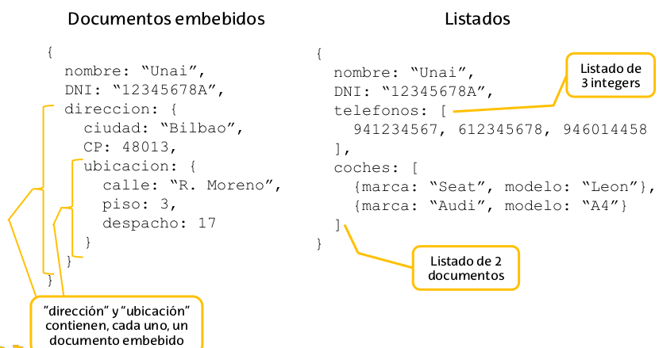
Normalmente:
MongoDB no proporciona una técnica concreta para definir relaciones entre colecciones: las debemos definir nosotros
Documentos embebidos
Utilizar campos concretos como referencia
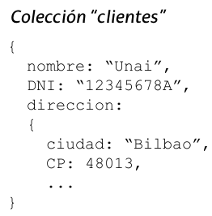
Adecuado para datos que no se solapan/repiten
(+) Los datos se agrupan lógicamente
(-) Puede generar duplicidades que debemos gestionar

Adecuado para datos que se referencien en diferentes colecciones
(+) Elimina posibles duplicidades
(-) Más complejo de gestionar
(-) Requiere agregaciones para obtener datos relacionados
Relación entre los datos 1 a N: un cliente puede tener múltiples direcciones, una dirección pertenece sólo a 1 cliente
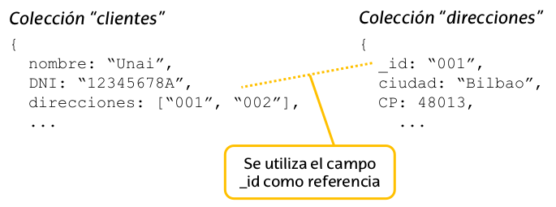
Relación entre los datos N a N: un cliente puede comprar múltiples productos, un producto puede ser comprado por múltiples clientes
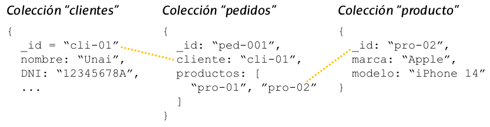
Documentos embebidos:
Referencias
Combinacion mediante agregacion ("Join")
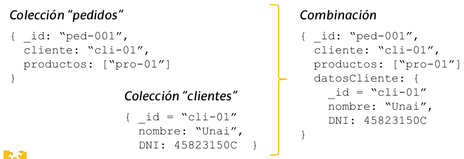
Ejemplo: Crear una colección que contenga los datos de los pedidos combinados con los datos de los clientes
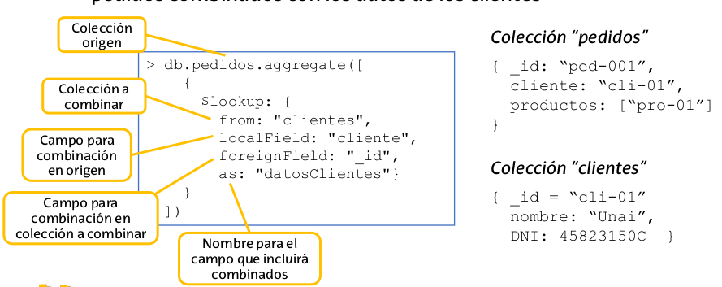
Es posible gestionar BBDD en MongoDB sin definir ningún tipo de estructura
Pero en algunas situaciones puede que queramos controlar los datos de forma automática: P.e. que todos los documento de una colección “productos” tienen un campo numérico “precio”

Se puede definir la estructura que deben cumplir los documentos de una colección
Un esquema verifica cada documento insertado en una colección y genera un aviso/error si es incorrecto
validationLevel: Controla cómo de estricta es la validación
validationAction: Indica qué hacer cuando un documento no cumple el esquema
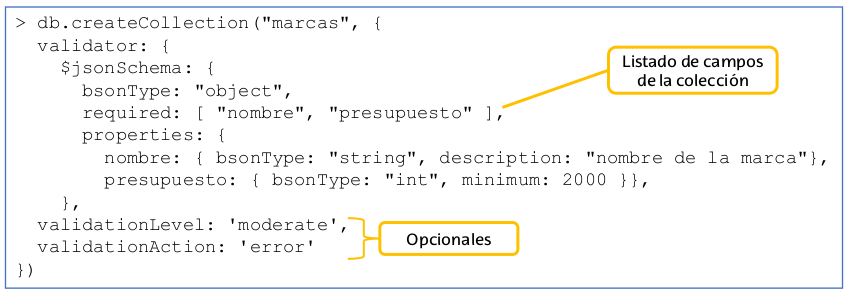
Mostrar el esquema de una colección:
> db.getCollectionInfos({name: "marcas"})
Modificar el esquema de una colección: 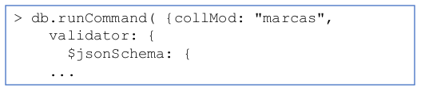
Si validationAction es “warn”, el resultado se escribe en el log de MongoDB, por defecto en /var/log/mongodb/mongod.log
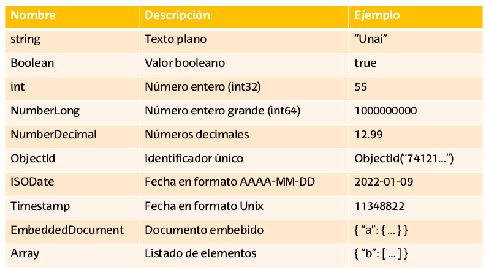